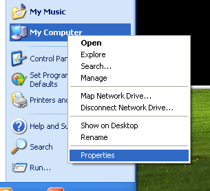

СодержаниеПредыдущий раздел< Инструменты разработчика Phalcon (Developer Tools) Следующий разделИнструменты разработчика (Developer Tools) в Mac OS X > На этой странице |
Инструменты разработчика Phalcon для Windows¶Эти шаги помогут вам с установкой инструментов разработчика Phalcon на Windows. Предпосылки¶Для запуска Инструментов разработчика необходимо установленное PHP расширение Phalcon. Если расширение еще не установлено, обратите внимание на инструкции в разделе Установка. Скачать¶Вы можете скачать кросс-платформенный пакет с инструментами разработчика в разделе Скачать. Можно так же клонировать его с Github. На платформе Windows вам необходимо настроить системную переменную PATH для запуска инструментов разработчика и выполнения php. Если вы скачали инструменты разработчика в виде ZIP-архива, то его необходимо распаковать, например в c:\phalcon-tools. Запомните этот каталог, путь к нему понадобится ниже. Отредактируйте файл “phalcon.bat”, для этого кликните правой кнопкой мыши и выберите “Редактировать”: 
Измените путь на тот, в который были установлены инструменты разработчика Phalcon: 
Сохраните изменения. Добавление PHP и Инструментов в системную переменную PATH¶Поскольку сценарии написаны на PHP, его необходимо установить на ваш компьютер. В зависимости от того, как был установлен PHP, его исполняемый файл может быть в разных местах. Найдите файл php.exe и запомните (скопируйте) путь к нему. Например, в последней редакции WAMP PHP по умолчанию располагается в: C:\wampbin\php\php5.3.10\php.exe. В меню Пуск правой кнопкой кликните на значок “My Computer” и выберите “Properties”:

Выберите вкладку “Advanced” и нажмите кнопку “Environment Variables”: В Windows 7 (Компьютер - свойства - дополнительные параметры системы - параметры среды) 
В нижней части диалога обратите внимание на раздел “System variables” и отредактируйте переменную “Path”: 
Будьте осторожны на этом шаге! В конце этой длинной строки вам надо будет добавить путь к установленному файлу php.exe и путь к установленным инструментам разработчика Phalcon. Используйте символ ”;” для разделения: 
Примените измнения, нажав кнопку “Ок” и закройте диалог. В меню Пуск выберите поле “Run”. Если не можете найти эту опцию, нажмите сочетание “Windows” + “R”. 
Выберите “cmd” и нажмите “Enter” для запуска окна консоли: 
Введите команду “php -v” и “phalcon” и увидите что-то вроде этого: 
Поздравляем, инструменты разработчика Phalcon установлены! Дополнительные руководства¶ |